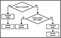

|
Developing Java Enterprise Applications
by Stephen Asbury ; Scott R. Weiner
Wiley Computer Publishing, John Wiley & Sons, Inc.
ISBN: 0471327565 Pub Date: 02/01/99

|
CHAPTER 10
Creating JavaServer Pages
Chapter 9 discussed the purpose of server-side scripting techniques and the benefit of JavaServer Pages. This chapter discusses the syntax for creating JavaServer Pages. Chapter 11, “A JavaServer Page Online Store,” explores a larger example of how JavaServer Pages can be used.
Currently, JavaServer Pages are implemented using a technology called page compilation in the Java Web Server. These pages are marked with a .jhtml extension to indicate that they combine Java and HTML. Sun is currently in the process of creating a more standard version of JavaServer Pages that uses a .jsp extension. At the time of this writing, the JHTML version of JavaServer Pages is available for commercial use; the JSP version is still being developed. Therefore, the discussions here are focused on JHTML.
NOTE: JHTML and JSP are very similar, and you should have no trouble updating to the new JSP standard when it is finalized.
All of the examples in this chapter were written and tested using the Java Web Server. To try a copy of this server, access the Sun Web site at java.sun.com/products. You should also check the documentation for your existing Web server or contact the provider to see if it offers support for JavaServer Pages.
How JavaServer Pages Work
The Web server handles a request for JavaServer Pages (JSP) by forwarding the request to a special servlet. This servlet, called the PageCompileServlet, takes requests for JSP and converts them into the appropriate action. If the page is requested for the first time, the appropriate action is to compile the JSP into a servlet and ask the servlet to service the request. Subsequent requests for the page results in a direct request to the servlet generated from the JSP. The PageCompileServlet generates a servlet for each JSP, and that servlet handles all further requests.
To get a handle on what the servlets generated from JavaServer Pages look like, let’s take the example of a JSP that doesn’t have any Java—in other words, a plain HTML file that has been labeled with the .jhtml extension, indicating to the server that it is a JavaServer Page and should be handled by the PageCompileServlet. Like all of the examples in this book, the following Hello World page is available on the CD-ROM.
<HTML>
<HEAD>
<TITLE>
Hello World
</TITLE>
</HEAD>
<BODY>
<H1>Hello World!</H1>
</BODY>
</HTML>
When the PageCompileServlet receives the request for this page, it generates the code for a servlet, then compiles the code. The servlet returns an HTML page like the one pictured in Figure 10.1.
In this example, the servlet code looks like this:
package pagecompile;
import java.io.*;
import java.util.*;
import javax.servlet.*;
import javax.servlet.http.*;
import com.sun.server.webserver.pagecompile.filecache.*;
import com.sun.server.webserver.pagecompile.ParamsHttpServletRequest;
import com.sun.server.webserver.pagecompile.*;
public class _HelloWorldNoCode extends HttpServlet
{
//-------------------------------
static { }
//-------------- The service method
public void service (HttpServletRequest request,
HttpServletResponse response)
throws ServletException, IOException
{
ServletOutputStream out = response.getOutputStream ();
ByteFileData __fileData = null;
try
{
__fileData = (ByteFileData) ServletUtil.getJHtmlSource(this,
“D:\\JAVA\\JWS1.1\\BIN\\..\\public_html\\HelloWorldNoCode.jhtml”
, null, 902608452000L);
if (__fileData == null)
throw new ServletException(“FileChanged”);
/*** lines: 1-10 */
__fileData.writeBytes (0, 96, out);
}
finally
{
if (__fileData != null) __fileData.close();
}
}
}
Figure 10.1 A simple JavaServer Page.
The servlet for this page simply opens the .jhtml file and outputs the data from the file to the client. In this case, because all of the data is HTML, the output process is a simple one. As the examples in the rest of this chapter show, this output process may be broken into several sections, depending on the Java code inserted into the page.
The boldface type in the previous code shows that the Hello World example servlet extends the HttpServlet class and is defined in the pagecompile package. Both the package and the superclass of the servlet can be modified. These values are discussed in more detail later in this chapter. The code generated for a JavaServer Page is stored in a directory named for the package. By default, on the Java Web Server, this will be in the server directory under pagecompile.
PageCompileServlet
The PageCompile servlet has a simple job. It converts JSP into Java, compiles it, and executes it. The only real decision making that goes on is when the servlet decides to recompile the JavaServer Page. This decision is affected by a number of values, as diagrammed in Figure 10.2. First, the servlet checks if the page has ever been compiled. If not, it is compiled. If the page has been compiled but the compiled version is out of date, the page is recompiled.
The page is recompiled when it changes, based on the constraint that the administrator can configure the servlet to wait for a minimum amount of time before checking whether the recompile needs to occur. In situations in which the page doesn’t change often, increasing this minimum time may improve performance slightly because the check will be done less frequently. Recall that the page compiler has to compile the Java code the first time a JSP is accessed. This means that the very first user to access the page may experience a delay that others, accessing the page later, will not encounter. If an error occurs during the compilation process, the PageCompileServlet formats it and returns the error information to the client. This allows the developer to see errors during testing.

Figure 10.2 A page compiler decision tree.
In addition to allowing the administrator to configure the minimum time to check whether a page changed, the Web server can provide other parameters for configuring the way that JavaServer Pages are treated. The parameters for the PageCompileServlet as implemented for the Java Web Server are listed in Table 10.1. Other Web servers may provide the same or different parameters than the ones listed here.
Refer to the documentation for your Web server to determine what configuration parameters it provides for JavaServer Pages.
When to Use JavaServer Pages
One obvious question is, when should we use JSP in place of servlets? The answer, as usual in this type of decision, is a resounding, “It depends.” JSP is a great way to include dynamic information in the context of an HTML page. Unlike a servlet, the JSP doesn’t require any changes to code in order to change the HTML output. This means that HTML designers can use well-defined Java code inside their HTML pages without necessarily knowing how to write a servlet from scratch. Also, because the PageCompileServlet does the compilation automatically, the development process is easier.

|


){kind=link}
){kind=link}
){kind=link}
){kind=link}